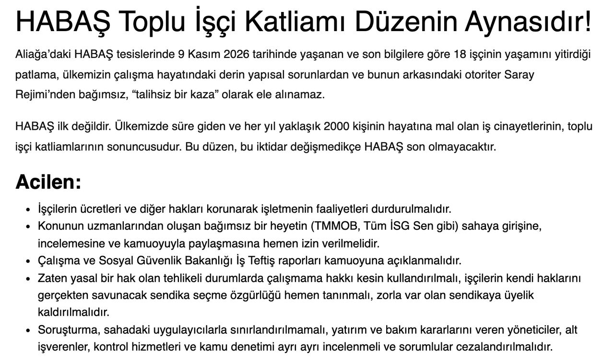
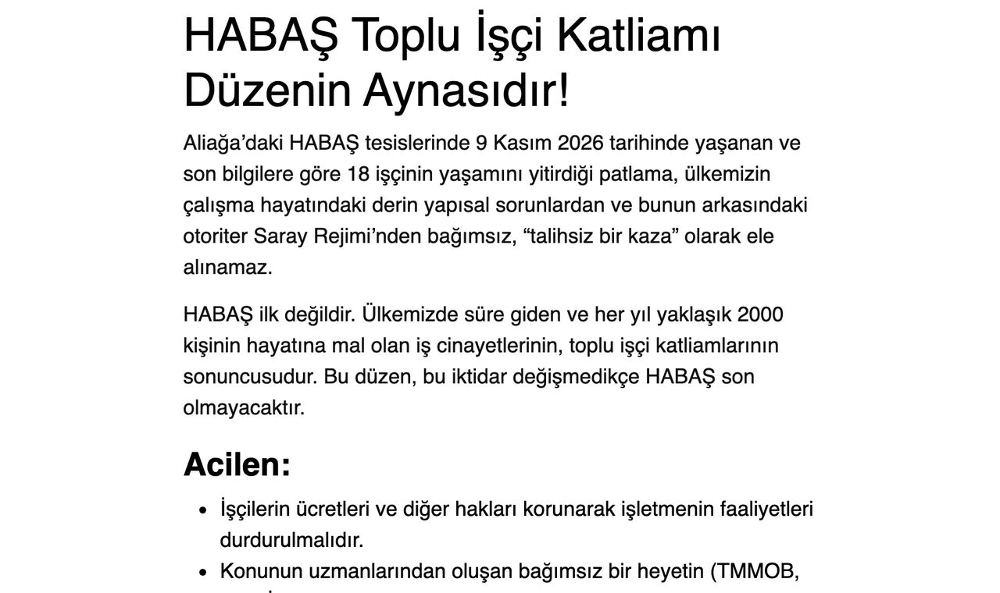

C-LH-003 · rev 1hypothesis
Is 1.6 line height better than 1.5?
Moderate spacing is sensible. No study isolates a gain from this exact change.
No reliable quantitative improvement established.Readability Lab is an open-source toolkit that reads your page the way a browser draws it. It counts characters on each rendered line, keeps accessibility failures apart from design heuristics, and links every recommendation to evidence you can check.
Most of what we read now arrives in a rectangle of light. The rectangle changes size from one moment to the next: a phone held in one hand on a train, a laptop on a kitchen table, a large monitor at work.
A line that is too short sends the eye back to the margin so often that a sentence loses its rhythm. A line that is too long makes the return journey harder. Between the two lies a wide middle ground, and nobody has found a single best point inside it.
Counted from the browser's line boxes, not from width ÷ font size. 50–75 is a starting range from Latin-script research — not an optimum, not a rule. Bars in red fall outside it.
Two switches run the same kind of checks the toolkit runs on yours, right here in your browser. Nothing is sent anywhere.
Outline every rendered line on the page, count its characters, and badge each block's text contrast.
Apply the WCAG 1.4.12 spacing overrides to everything — line height 1.5, paragraph spacing 2×, letter spacing 0.12, word spacing 0.16 — and look for text that gets cut off.
A line longer than a guideline is a design choice, not a compliance failure. Every finding carries exactly one mark — and only a check that actually ran can fail your build.
Contrast below 4.5:1, text lost under spacing overrides, two-direction scrolling at 320px.
A gradient behind text, an overlay, an approximation. Unknown is never a pass.
135 characters per line, 15px text. Worth a look — not a WCAG failure.
Canvas text, cross-origin frames, closed components, scripts the research doesn't cover.
1.5 vs 1.6 line height, a font shortlist. Proposed as experiments, never as fixes.
Only for checks that actually finished — every report says what was not tested.
Default CI policy fails only on accessibility-failure. Exceptions need a reason and a review date.
Moderate spacing is sensible. No study isolates a gain from this exact change.
No reliable quantitative improvement established.We ran rlab check on a live article on tip.org.tr, applied the Balanced recipe to the article region only, and re-ran the same checks. The rest of the page is untouched.


Region #postContent > article, Chromium 158 at 1280×800 and 390×844, captured 12 November 2026, same checks before and after. These are layout measurements: no speed or comprehension change is implied. The costs show too. The article got taller (3613 → 5065px). On a phone the column already fills the width, so the larger text drops lines from 40 to 36 characters. One needs-review item stays in both runs: the declared font, Gabarito, did not load, so the text renders in a fallback. Reports and the recipe are in examples/real-page/.
Same profile format, same measurements, same rules — so the extension, the workbench, CI and your agent always agree.
for readersAdjust any article or open a calm reader view. Presets as starting points, per-site choices, shortcuts, compare, exact reset.
Chromium · Firefox buildfor designersSame text, side by side, on desktop, tablet, phone and enlarged. Blind fonts, apparent-size matching, token export.
#/compare · #/atlas · #/explorefor developersInspect local dev pages or live URLs, gate pull requests on a policy, keep JSON, Markdown and screenshots.
rlab check <url> --policy policy.jsonfor publishersA keyboard-friendly reading panel and headless API. Your defaults, their choices — access needs protected.
<rl-reading-controls>for agentsSeven tools over the same engine and a skill that measures, changes, re-checks and reports what it didn't test.
rl_inspect · rl_compare · rl_claimsOne number hides the trade-offs. You get measurements, findings and their evidence.
Balanced, Larger Text and Compact are labelled as starting choices. No universal optimum has been established.
Nothing promises speed, comprehension or less eye strain. A test fails the build if such a claim appears.
Viewing distance, glare, brightness and visual needs are never inferred from page styles.
Line-length ranges come from Latin-script research and are not applied to Japanese, Arabic or other scripts.
Node 20+ and pnpm 10. Free, Apache-2.0, no account, no telemetry. Run each command on its own.
pnpm installnpx playwright install chromiumpnpm buildnode packages/cli/bin/rlab.mjs check fixtures/broken-clipping.html --out reports/demoExits with code 1 on purpose: that fixture is broken. Open reports/demo/report.md.
46 browser tests and 25 unit tests pass in this release.
| Surface | Status | How we know |
|---|---|---|
| CLI & inspector | Tested | Chromium 158; real WCAG 1.4.12 and 1.4.10 scenarios; exact counts on ground-truth fixtures. |
| Extension · Chromium | Tested | Save, reuse, exact restore, modal reader view, privacy checks. |
| Extension · Firefox | Builds | Passes web-ext lint with 0 errors; not yet exercised at runtime. |
| Workbench & controls | Tested | Exports reproduce in the CLI within ±2 CPL; axe-core finds no A/AA violations in the controls. |
| MCP server | Tested | Exercised with the official MCP SDK client. |
| Safari · Figma plugin | Planned | On the roadmap with guided reading experiments. |
It is a defensible starting point inside a 50–75 range, not a proven optimum. Some studies found longer lines faster; others favoured intermediate widths for comprehension or preference. The tools show your measured distribution and let you decide.
No — it means the listed checks passed. Every report names what was not tested, including screen readers, keyboard use of your own controls and text-only zoom.
No. It processes everything in the page and stores settings locally. Shared profiles contain settings only, never the sites you visit, and reader view makes no new network requests.
Specialist fonts have not consistently outperformed conventional ones, and light versus dark depends on the reader. Readability Lab offers choices and protects your access needs instead of prescribing one answer.
It measured the rendered line boxes of every text block on this page and computed WCAG contrast from the computed colours — a simplified version of the inspector, run in your browser. The full inspector also resolves overlays and backgrounds and reports what it could not measure.